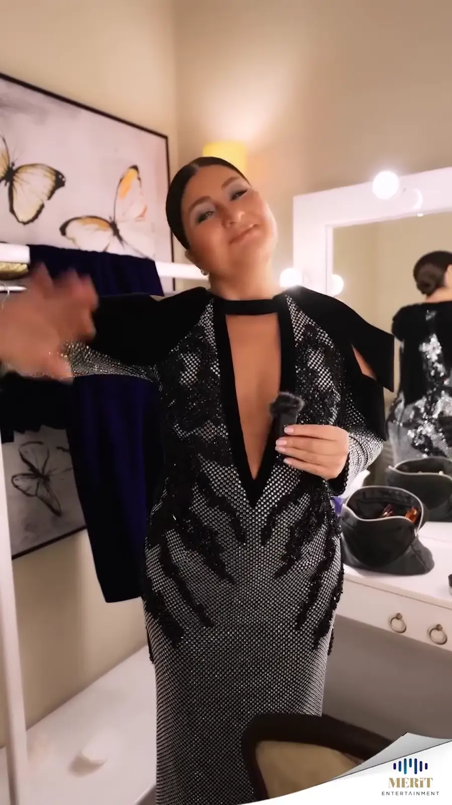

HAKKIMIZDA
Merit
Entertainment
Merit International bünyesindeki organizasyonların planlama aşamasından sonuçlandırılmasına kadar tüm süreçlerini yürüten departmandır.
Merit Entertainment, 1988’den bu yana konaklama ve eğlenceyi aynı çatı altında sunan Merit International bünyesinde faaliyet gösterir. Girne’deki Merit Royal Diamond’dan Lefkoşa, Park, Crystal Cove ve Royal Gardens’a; Bulgaristan’daki Grand Mosta’dan Karadağ’daki Starlit’e uzanan otel sahnelerinde, alanında uzman ve deneyimli ekibiyle Türkiye’nin ve dünyanın sevilen sanatçılarını misafirlerle buluşturur.
Organizasyonları tek bir konser olarak değil, bütün bir gece olarak ele alır. Sahne tasarımını, ışık ve ses prodüksiyonunu, koreografiyi ve salon akışını aynı takvim içinde planlar; her etkinliği, sanatçının performansını öne çıkaracak ve salonun her noktasına aynı heyecanı taşıyacak biçimde tasarlar.
Konser programını inceleyin ↗
Organizasyonun kurgusu
Bir organizasyonu, sahne kurulmadan haftalar önce planlamaya başlar. Sanatçının repertuvarını, sahne yerleşimini, ışık ve ses planını otelin o geceki akışıyla birlikte ele alır. Merit Royal Diamond’da programı doğrudan sanatçının etrafında kurar; 12 kişilik yuvarlak masalar ve loca katıyla salonun her noktasını sahneye bağlayan bir düzen oluşturur. Maxim Royal’de ise Türk kabare geleneğini canlı müzik, temalı kostüm ve dansla sürdürür.
Sezon programını otel sahnelerinin takvimiyle birlikte yürütür. Böylece aynı hafta içinde Girne’de bir konser, Lefkoşa’da bir gala ve Grand Mosta’da bir yılbaşı gecesi eşzamanlı olarak planlanabilir.
Etkinlik takvimini inceleyin →